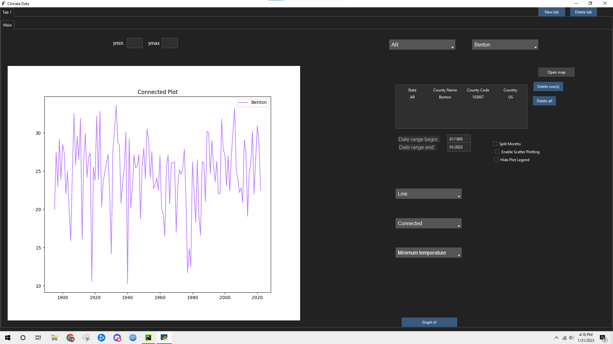
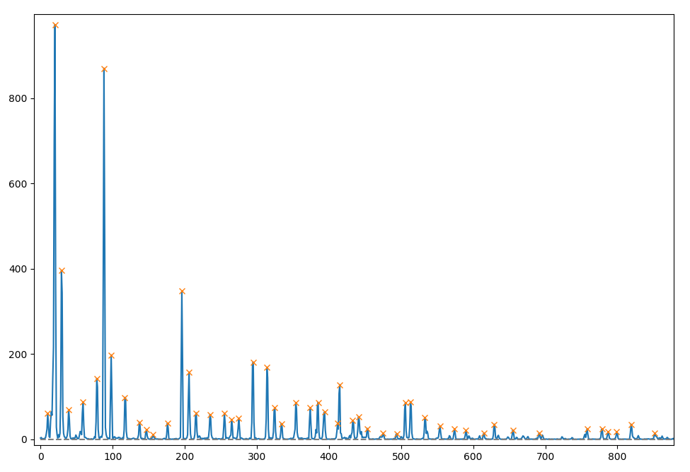

Christopher Snow
Projects
Below are some featured projects from my time at Portland State University
Chess AI
 By far my favorite classes I have taken have been on Machine Learning and Artificial Intelligence. There
are just so many cool concepts to learn, and the results you can achieve are amazing. And this is one of
my favorite projects, it is an an AI chess-playing program. I built this program to practice implementing
the min-max algorithm and the alpha-beta pruning technique used in many forms of game-playing AI. This
Python-based chess AI isn't amazing, but it is still impressively decebt. And I'm not that good at chess
either, so playing against it was tough!
By far my favorite classes I have taken have been on Machine Learning and Artificial Intelligence. There
are just so many cool concepts to learn, and the results you can achieve are amazing. And this is one of
my favorite projects, it is an an AI chess-playing program. I built this program to practice implementing
the min-max algorithm and the alpha-beta pruning technique used in many forms of game-playing AI. This
Python-based chess AI isn't amazing, but it is still impressively decebt. And I'm not that good at chess
either, so playing against it was tough!
Climate Data Analysis
 For my Senior Project, my team and I were assigned a task extending a pre-existing program. Working on this program was a fantastic experience. I learned a lot working with my team, and working with a pre-existing codebase. The program itself is really neat too, it can analyze and compare climate data for any county in the United States - temperatures, precipition, anything you could ask for. My tasks included working on the program UI, making it scale dynamically intead of being a static size. I also made modifications to the data graphs, adding features like custom data ranges and informational tooltips.
Pitch-Bot 9000
 This project is from another one of my favorite classes: Computers, Sound & Music. This was my final project for the class, it is a custom "Auto-tune" pitch correction software. It utilizes the STFT (Short-Time Fourier Transform) and other custom algorithms to detect and modify the frequencies of WAV files. My main hobby (besides programming) is being an amateur musician, so learning techniques of digital audio manipulation was a great experience. I am excited to continue my studies of this subject, especially in conjunciton with the machine learning techniques I've learned in my other classes.